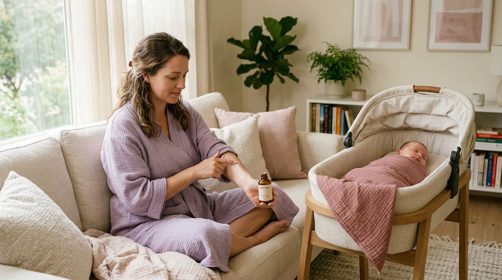
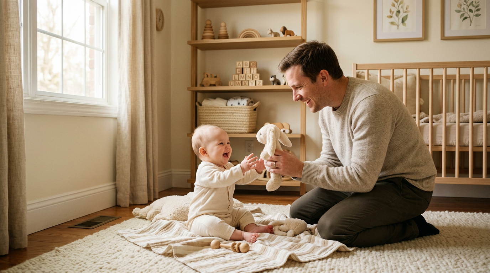

Home feed — bottom slot / post-record success
Cozy Pregnancy
Your silky-smooth transition into motherhood
Ease into your changing body—smooth, soothing, relaxed.
Start soft →Cozy Feeding
The magic of feeding on your own terms
Wearable pumping—efficient, free, and simple.
Unlock flow →
Cozy Recovery
Be a mom—and still be you
Breast care to body support—gentle relief.
Ease in gently →Cozy Outing
Your pass to explore the world with baby
Light bags, easy carriers—outings feel doable.
Pack light & go →
Cozy Parenting
The calmer checklist for new parents
Soft essentials, safer routines—every day.
See the list →